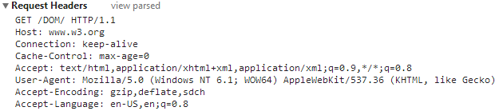

Webtechnology
Chapter 1 - Introduction to the Internet and the World Wide Web
Overview
- Evolution of the Internet
- The World Wide Web
- Basics of the web
Evolution of the Internet
The Internet
- A global network of computers
- Was made possible by the convergence of computing and communications technologies.
Arpanet
- Late 1960s:
- ARPA (the Advanced Research Projects Agency) rolled out blueprints for networking the main computer systems of about a dozen ARPA-funded universities and research institutions.
Arpanet
- They were to be connected with communications lines operating at a then-stunning 56 Kbps.
- This at a time when most people (of the few who could) were connecting over telephone lines to computers at a rate of 110 bits per second.
Arpanet
ARPA proceeded to implement the ARPANET.

(1969)
- UCSB: University of California, Santa Barbara
- UCLA: University of California, Los Angeles
- SRI International - An Independent Nonprofit Research Institute
- University of Utah
Arpanet
- Rather than enabling researchers to share each other’s computers
- it rapidly became clear that communicating quickly and easily via electronic mail was the key early benefit of the ARPANET.
- This is true even today on the Internet, which facilitates communications of all kinds among the world’s Internet users.
Packet Switching
One of the primary goals for ARPANET was to allow multiple users to send and receive information simultaneously over the same communications paths (e.g., phone lines).

The network operated with a technique called packet switching, in which digital data was sent in small bundles called packets.
Packet Switching
- The packets contained
- address
- error-control
- sequencing information
- The address information allowed packets to be routed to their destinations.
TCP/IP
The protocol (i.e., set of rules) for communicating over the ARPANET became known as TCP - the Transmission Control Protocol.
TCP ensured that messages were properly routed from sender to receiver and that they arrived intact.
TCP/IP
As the Internet evolved, organizations worldwide were implementing their own networks for both:
- intraorganization communications (i.e., within the organization)
- interorganization communications (i.e., between organizations)
TCP/IP
-
Challenge:
- get these different networks to communicate.
-
ARPA:
- development of IP (Internet Protocol)
- truly creating a network of networks, the current architecture of the Internet
TCP/IP
The combined set of protocols is now commonly called TCP/IP.
- Each computer has unique IP address.
- Current IP standard is IPv4.
- IPv6 is being deployed.
Explosive growth of the Internet
- First limited to universities and research institutions.
- Next came the military.
- Eventually public access.
The World Wide Web

The World Wide Web
- The World Wide Web allows computer users to execute web-based applications and to locate and view multimedia-based documents on almost any subject over the Internet.
- In 1989, Tim Berners-Lee of CERN (the European Organization for Nuclear Research) began to develop a technology for sharing information via hyperlinked text documents.
- Berners-Lee called his invention the HyperText Markup Language (HTML).
The World Wide Web
- He also wrote communication protocols to form the backbone of his new information system.
- In particular, he wrote the Hypertext Transfer Protocol (HTTP) - a communications protocol used to send information over the web.
- The URL (Uniform Resource Locator) specifies the address (i.e., location) of the web page displayed in the browser window.
- Each web page on the Internet is associated with a unique URL.
- URLs usually begin with http://.
Browsers
-
Web use exploded with the availability in 1993 of the Mosaic browser, which featured a user-friendly graphical interface.
- Marc Andreessen, whose team at the National Center for Supercomputing Applications (NCSA) developed Mosaic, went on to found Netscape, the company that many people credit with igniting the explosive Internet economy of the late 1990s.
- But the "dot com" economic bust brought hard times in the early 2000s.
- The resurgence that began in 2004 or so has been named Web 2.0.
Web 1.0 and 2.0
- Web 1.0 (the state of the web through the 1990s and early 2000s) was focused on a relatively small number of companies and advertisers producing content for users to access (some people called it the brochure web).
Web 1.0 and 2.0
- In 2003 there was a noticeable shift in how people and businesses were using the web and developing web-based applications.
- Web 2.0 involves the users - not only do they often create content, but they help organize it, share it, remix it, critique it, update it, etc.
Basics of the Web

A web page
- In its simplest form, a web page is nothing more than an HTML (HyperText Markup Language) document (with the extension .html or .htm) that describes to a web browser the document's content and structure.
URIs and URLs
- URIs (Uniform Resource Identifiers) identify resources on the Internet.
- URIs that start with http:// are called URLs (Uniform Resource Locators).
-
Parts of a URL
- A URL contains information that directs a browser to the resource that the user wishes to access.
- Web servers make such resources available to web clients.
- Popular web servers include Apache’s HTTP Server and Microsoft’s Internet Information Services (IIS).
Components of a URL
Let's examine the components of the URL: http://www.labict.be/index.html
- The text
http://indicates that the HyperText Transfer Protocol (HTTP) should be used to obtain the resource. -
Next in the URL is the server's fully qualified hostname
www.labict.be- This is the name of the web-server computer on which the resource resides.
- This computer is referred to as the host, because it houses and maintains resources.
Components of a URL
-
The hostname
www.labict.beis translated into an IP (Internet Protocol) address- a numerical value that uniquely identifies the server on the Internet.
- An Internet Domain Name System (DNS) server maintains a database of hostnames and their corresponding IP addresses and performs the translations automatically.
Components of a URL
-
The remainder of the URL
/index.htmlspecifies the resource's location/and nameindex.htmlon the web server.- The location could represent an actual directory on the web server’s file system.
- For security reasons, however, the location is typically a virtual directory.
- The web server translates the virtual directory into a real location on the server, thus hiding the resource’s true location.
Client server interaction
Client request
-
Event:
- User accesses a web page.
- HTTP (Hypertext Transfer Protocol) is the communication protocol used by the webserver and browser.
The client request
You can track the communication between client and server with WireShark or Chrome itself (F12).
-
The web browser sends an HTTP request to the server.
- The word GET is an HTTP method indicating that the client wishes to obtain a resource from the server.
- The remainder of the request provides the path name of the resource (e.g., an HTML5 document) and the protocol’s name and version number (HTTP/1.1).
The client request
-
HTTP request
- The client's request also contains some required and optional headers.
Client server interaction
Server response
The server response
-
The server first sends a line of text that indicates the HTTP version, followed by a numeric code and a phrase describing the status of the transaction (success or fail).
- HTTP/1.1 200 OK
- HTTP/1.1 404 Not found
The server response
- Next, the server sends one or more HTTP headers, which provide additional information about the data that will be sent.
The server response
-
In this case, the server is sending an HTML5 text document.
- Content-type: text/html
- The information provided in this header specifies the Multipurpose Internet Mail Extensions (MIME) type of the content that the server is transmitting to the browser.
The server response
Finally, the server sends the contents of the requested document.
The rendering process
The client-side browser then renders the document, which may involve additional HTTP requests to obtain associated CSS and images